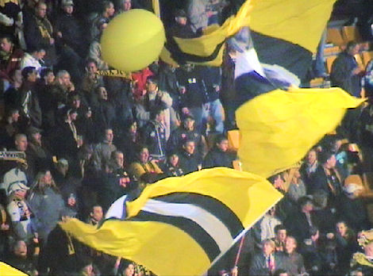

|
Roda JC - ASWH (5-0) 8 november 2006
|
De supporters van ASWH openden sfeervol met mooi vuurwerk dat tot buiten het
stadion zichtbaar was.
foto: www.sv-online.info
Bouchiba die verrassend in de basis staat scoort al na twee minuten de
openingstreffer: 1-0
foto: www.sv-online.info
Vandamme heeft zojuist 2-0 gescoord, (8').
Terwijl de sfeermensen uit Hendrik Ido Ambacht met hun vlaggen zwaaien...
...wordt door een van de 6.500 toeschouwers het programmaboekje doorgenomen.
Gaat best goed met een lege beker prut.
Uit een corner van Bouchiba kopt Kah de bal naar De Fauw.
Deze neemt de bal aan op de borst controleert en lepelt de bal achter doelman
Joan van Belzen: 3-0, (27').
Een van de weinige kansen voor de gasten. Een vrije trap wordt breed gespeeld
naar een vrijstaande man die mooi op doel schiet. Kujovic kan de bal
echter
gemakkelijk pakken.
In het kader van "Dag van de amateurs" waren er veel jeugdige spelertjes op de
vrij
volle oost-tribune.

In de 41e min. is het al 4-0 door Agustien.
Vrije trap van Ramzi ketst af op de muur.
Nadat Oper een van de vele kansen verprutst komt de bal voor de voeten van Cissé
die met een prachtige krul via de paal doel treft: 5-0, (54').

Vlagvertier en ballonnenbal op west.
Pijnlijk om te zien hoe Oper minstens vijf "100%-kansen" verprutste. Zo ook
hier.
Geen basisplaats voor De Jong deze keer die hier zijn tegenstander afschudt.
De wedstrijd eindigt in een 5-0 overwinning. Roda gaat door naar de laatste 16.
De spelers schieten na de wedstrijd ballen in de tribunes. De Kickoff is open en
het blijft er een uurtje gezellig. Prima voor een midweekse dag.
Elbekay Bouchiba en Jamaïque Vandamme lieten Joan van Belzen, de doelman van
ASWH, al binnen acht minuten tweemaal kansloos, Davy de Fauw maakte in de 27e
minuut de 3 - 0 en Kemy Agustien tekende in de 41e minuut voor de ruststand van
4 - 0.
Sekou Cissé ingevallen voor Adil Ramzi zorgde tien minuten na de rust voor de
5-0, waarna de ploeg van Huub Stevens gas terugnam en het bekertreffen
plichtmatig uitspeelde.
Roda JC : Vladan Kujovic, Jan-Paul Saeijs, Pa Modou Kah, Davy de Fauw, Vincent
Lachambre, Kemy Agustien, Marcel Meeuwis, Andres Oper, Elbekay Bouchiba,
Jamaïque Vandamme en Adil Ramzi.
ASHW : Joan van Belzen, Boudy Hoogendoorn, Marvin Redjosetiko, Roël Gorré, Johan
Sturrus, Ferry van Lare, Stefan van Dam, Izaäk Verhoeven, Danny Slingerland,
Dennis Schut en Danny Versluis
--------------------------------------------------------------------------------
Doelpunten
--------------------------------------------------------------------------------
Elbekay Bouchiba 2e minuut 1 - 0
Jamaïque Vandamme 8e minuut 2 - 0
Davy De Fauw 27e minuut 3 - 0
Kemy Agustien 41e minuut 4 - 0
Sekou Cissé 54e minuut 5 - 0
--------------------------------------------------------------------------------
Wissels
--------------------------------------------------------------------------------
Sekou Cissé 46e minuut Adil Ramzi
Scheidsrechter : Danny Makkelie
Toeschouwers 7000
© Koempels Pleasure Dome
|